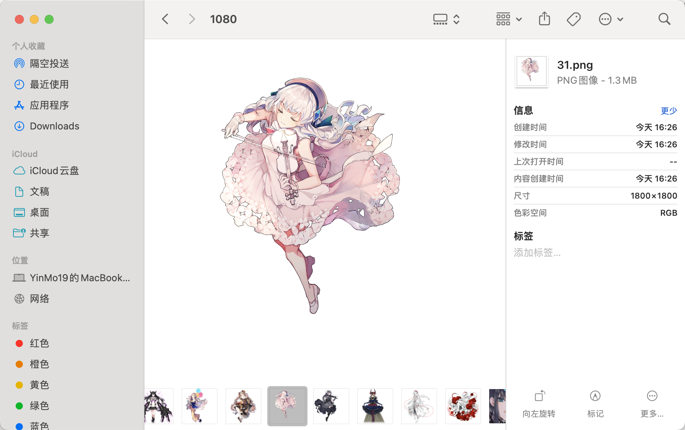

在 Arcaea 5.10 版本中更新了 Linkplay 的功能，其中包括了发送一些漂亮可爱的小贴图。这里提供一种简单的方式来获取她们。
首先，我们在游戏内既然可以点击按钮发送并能否看到这些小贴纸，说明这些图片已经在我们的游戏设备中存在了。一般来说这种游戏资源不可能是在线请求的，而是会直接放在安装包里面（不然 Arcaea 1.3G 的安装包放了什么东西），因此我们可以直接通过拆包来获取。
游戏安装包大体分为两类，安卓的 apk 和 iOS 的 ipa 文件。这里都可以，我们选择 apk 文件。apk 文件实际上是一个 zip 压缩包，我们可以直接改后缀名然后解压缩，但是为了之后可以更改完再重新打包，我们选择 apktool 工具。
apktool 是什么？官网的介绍是 “A tool for reverse engineering Android apk files”，即是一个用于反编译和重新编译 apk 文件的命令行工具。他支持全平台使用，安装方法：
Windows ： 去官网下载软件的压缩包，然后解压之后放在一个你喜欢的地方，把这个文件夹添加到系统路径中。去命令行中测试
apktool，如果出现了工具本身的 help 文档就说明成功了。你可能的问题：（请自行查阅，这或许对你以后的命令行使用有很大的帮助）
- 什么是系统路径？
- 系统路径是做什么的？
- 为什么添加到系统路径之后可以直接在命令行输入
apktool就可以了？- 如果不添加系统路径我怎么使用 apktool 呢？
MacOS : 如果你的电脑已经拥有了
homebrew,那么只需要brew install apktool就可以了。MacOS 是一个 类 Unix 系统，如果你使用了 Mac 电脑，我默认你已经对这些东西都已经有一个清晰的认知。Linux : 即然你已经使用了 linux 系统 ，那么怎么安装包已经不需要我再介绍了，一般对于 debian 系的用户就是
sudo apt install apktool，其他用户自行查阅。
下载安装包
这一步对于安卓用户你怎么玩的游戏就怎么下载，本节主要面向 iOS 用户。在官网 arcaea.lowiro.com/zh 下，他会自动检测你的 ip 地址来提供你的下载途径。对于大陆地区，会直接提供 apk 安装包，而对于大陆外则提供 Google Play 的链接。所以请在下载的时候注意你的 ip 地址位置，不要使用大陆外的代理访问。
apktool d 安装包
首先在命令行中进入刚才你下载安装包的那个文件夹。（使用 cd 命令，例如从 /Users/yourname/ 进入到 /Users/yourname/Downloads/可以在命令行输入 cd Downloads）。接下来输入 apktool d Arcaea5_xx_x.apk，来反编译特定版本的 apk 文件。你大概会看到如下输出(我使用 Mac 电脑，但是大体上都是相似的)：
➜ Downloads apktool d arcaea_5.10.1c.apk
I: Using Apktool 2.9.3 on arcaea_5.10.1c.apk
I: Loading resource table...
I: Decoding file-resources...
I: Loading resource table from file: /Users/yinmo19/Library/apktool/framework/1.apk
I: Decoding values */* XMLs...
I: Decoding AndroidManifest.xml with resources...
I: Regular manifest package...
I: Baksmaling classes.dex...
I: Baksmaling classes2.dex...
I: Copying assets and libs...
I: Copying unknown files...
I: Copying original files...
➜ Downloads
我这里的 ➜ Downloads是 MacOS 的 zsh 此时本文件夹的提示符。此时我们的文件目录应该大概是这样
➜ Downloads tree -L 2
.
├── arcaea_5.10.1c
│ ├── AndroidManifest.xml
│ ├── apktool.yml
│ ├── assets
│ ├── kotlin
│ ├── lib
│ ├── original
│ ├── res
│ ├── smali
│ ├── smali_classes2
│ └── unknown
└── arcaea_5.10.1c.apk
10 directories, 3 files
➜ Downloads
那么接下来我们就需要去查找我们想要的小贴纸了。一般来说资源文件都会放在 assets 下面，但是即使我们不知道这件事，我们也可以选择查找。这里我们使用 MacOS 和 Linux 中的 find 命令来进行查找。这个命令可以在一个文件夹中按照某种方法来查找文件，如果你不是很熟悉，你可以考虑安装 tldr 包来看看这个命令怎么用。使用 brew install tldr 之后，查看 find 命令。
➜ Downloads tldr find
find
Find files or directories under a directory tree, recursively.
More information: <https://manned.org/find>.
- Find files by extension:
find root_path -name '*.ext'
- Find files matching multiple path/name patterns:
find root_path -path '**/path/**/*.ext' -or -name '*pattern*'
- Find directories matching a given name, in case-insensitive mode:
find root_path -type d -iname '*lib*'
- Find files matching a given pattern, excluding specific paths:
find root_path -name '*.py' -not -path '*/site-packages/*'
- Find files matching a given size range, limiting the recursive depth to "1":
find root_path -maxdepth 1 -size +500k -size -10M
- Run a command for each file (use `{}` within the command to access the filename):
find root_path -name '*.ext' -exec wc -l {} \;
- Find all files modified today and pass the results to a single command as arguments:
find root_path -daystart -mtime -1 -exec tar -cvf archive.tar {} \+
- Find empty files (0 byte) or directories and delete them verbosely:
find root_path -type f|d -empty -delete -print
➜ Downloads
现在我们不如来查找 maya 也就是我们的妈呀小姐～ 根据上面的命令文档，我们可以简单的使用命令行来查找她。
➜ Downloads find ./ -iname "*maya*"
.//arcaea_5.10.1c/assets/img/1080/arghena/maya_shadow.png
.//arcaea_5.10.1c/assets/img/multiplayer/stickers/maya.png
.//arcaea_5.10.1c/assets/img/story/entry_maya.png
.//arcaea_5.10.1c/assets/img/story/entry_maya_pressed.png
.//arcaea_5.10.1c/assets/img/story/entry_maya_boss.png
.//arcaea_5.10.1c/assets/img/story/entry_maya_boss_pressed.png
.//arcaea_5.10.1c/assets/audio/insight_maya_vanish.wav
➜ Downloads
根据游戏中贴图的使用是在 Linkplay ，显然 .//arcaea_5.10.1c/assets/img/multiplayer/stickers/maya.png 就是我们想要的。
现在我们就已经获得了所有我们想要的图，甚至我们还拥有了全语言版本。
相似的，我们也可以获取所有角色的图片。她们位于 arcaea_5.10.1c/assets/char/1080 下面。

修改之后的重打包
当我们并不拥有一个角色，但是我们很想要本地显示这个角色的时候，我们可以在 arcaea_5.10.1c/assets/char/1080 里面将两个角色的图片的文件名对调，或者使用别的图片替换对应文件，这样在我们本地显示的就会变成我们想要的角色（图片）了，当然云端储存的信息还是原始信息，在好友显示中还是原本的角色。这里我们主要讨论如何将已经反编译后的文档重打包。
刚才我们使用apktool d了安装包，现在我们将其重新打包起来。使用 apktool b </path/to/dir> -o <output_apk_name>，这里 b 按照我的理解应该是和 d 对称，表示重新打包（当然这只是我的猜测和我的记忆方案），而 -o 等价于 --output，表示输出。还是一样的，如果你不熟悉，你可以使用 tldr 来看看这个命令如何使用。
➜ Downloads tldr apktool
apktool
Reverse engineer APK files.
More information: <https://ibotpeaches.github.io/Apktool/>.
- Decode an APK file:
apktool d path/to/file.apk
- Build an APK file from a directory:
apktool b path/to/directory
- Install and store a framework:
apktool if path/to/framework.apk
➜ Downloads
重新打包大概会出现下面的信息。
➜ Downloads apktool b arcaea_5.10.1c -o ARCAEA_CHANGE.apk
I: Using Apktool 2.9.3
I: Checking whether sources has changed...
I: Smaling smali folder into classes.dex...
I: Checking whether sources has changed...
I: Smaling smali_classes2 folder into classes2.dex...
I: Checking whether resources has changed...
I: Building resources...
I: Copying libs... (/lib)
I: Copying libs... (/kotlin)
I: Building apk file...
I: Copying unknown files/dir...
I: Built apk into: ARCAEA_CHANGE.apk
➜ Downloads
那么此时我们就拥有了一个新的 APK 文件，我们需要将其安装到安卓手机上。然而安卓手机在安装 apk 文件之前会检查文件的签名和包名。因此我们还需要将其签名（所幸本游戏没有加密、加壳、反调试和签名校验等等）。签名也有命令行工具，然而我们有更简单的方法。将我们生成的 apk 文件发送到你的设备上，在设备上下载一个 mt管理器，它可能会需要你注册登陆，但是那非常简单。在 mt 中找到你生成的 apk 文件。单击它，左下角功能，然后你就会看到一个签名的选项，点击签名然后使用默认签名方案签名之后就可以安装了。
所说的改包名主要是为了共存。当然 mt 也提供了这个选项。当你想要在一个设备中安装两个一样的安装包，你就需要这个功能，它依然是傻瓜式的点击按钮，所以这里不再说明。至此你已经可以成功获取小贴图和更改图案了。
文章作者： YinMo19
文章链接： https://yinmo19.github.io/2024/09/02/Arcaea-%E5%B0%8F%E8%B4%B4%E5%9B%BE/
版权声明：除另有声明外，本博客文章均采用 CC BY-NC-SA 4.0 许可协议。转载请注明原作者与文章出处。